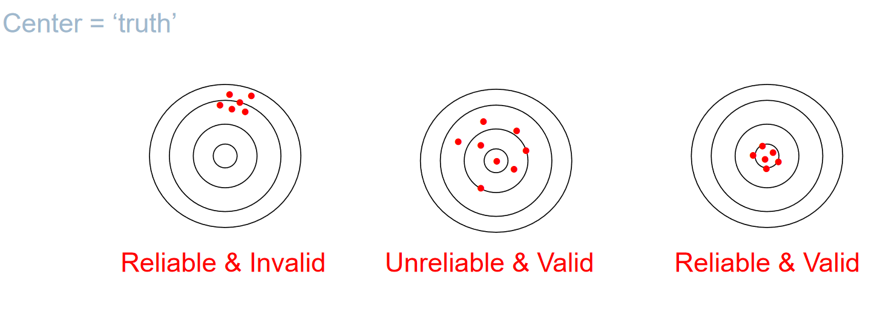

Research Method in Human Factors
인간 공학

human factors research
실험을 통해 모형을 구축하고 법칙을 찾아 예측한다.
reaserch meathods
descriptive Research
관찰을 통해 데이터 묘사
무엇을 측정할지
어떻게 숫자로 표현할지
- 대부분 평균, 표준편차를 대푯값으로 사용
- 변수들 간의 관계를 파악하기 위해 상관분석, 회귀분석을 사용
types of descriptive research
- observational research
- 관찰 연구를 계획할 때, 측정할 변수, 각 변수를 기록할 방법, 관찰이 이루어지는 조건, 관찰 기간 등을 식별
- survey research
- 설문조사를 통해 데이터 수집
- incident and accident analysis
- 사고나 오류를 분석하여 원인을 찾음
- 사고나 오류를 줄이기 위한 대책을 마련
experimanetal Research
하나 이상의 독립변수에 의도적인 변화를 주고, 그 변화가 하나 이상의 종속변수에 미치는 인과관계를 측정
이때 다른 변수들은 통제한다
- 예시
- 휴대전화를 사용하는 것이 운전에 미치는 영향
- 인센티브를 미리 주고 잘못 할 때마다 차감하는 것과, 잘할 때마다 인센티브를 주는 것의 차이
type of variables
- independent(predictor, stratification) variable
- dependent(descriptive, criterion) variable
- control variable: 이 값은 고정시키고 실험을 진행한다. 일반화하기 어렵게 한다.
- random variable (sigma): 통제할 수 없는 변수. 일반화하기 용이하다.
- confounding variable: 수식에는 포함되지 않지만 주의해야하는 변수.
decide variables
operational definition: 변수를 관찰 가능하고 측정 가능한 형태로 정의
- independent variable
- Range: realistic / select a range taht will show the effect / pilot experiment
- dependent variable
- reliability: consistent. solution: increase the number of observations
- validity: measure what was intended

why use experimental research?
- humans are variable
- intra individual variability
- inter individual variability
- ways to handle variability
- use statistical techniques
- control variability as much as possible
types of experimental design
- single variable experiment
two levels
multi levels
- factorial design: 두개 이상의 독립변수를 조합하여 실험군을 만든다.
- 변수 간
interaction effect을 확인할 수 있다. - more difficult to analyze
- 2 x 2, 3 x 3, 2 x 2 x 2 등으로 설계한다.
- between-subject, within-subject를 모두 사용하는 mixed designs를 사용할 수 있음.
- between-subjects design: 각각의 실험군에 다른 사람들을 넣는다.
- generalibility 높다, intra person variability를 제거할 수 있다.
- within-subjects design: 같은 사람들을 다른 실험군에 넣는다.
- cost-effective, less variability, inter person variability를 제거할 수 있다.
evaluation research
시스템이나 제품이 목적을 충족하는지 평가
usability testing: 사용자가 제품을 실제로 사용하면서 발생하는 문제점 파악- 태스크 완료 시간, 오류율, 사용자 만족도 등을 측정
cost-benefit analysis: 제품 또는 시스템 도입의 경제성 평가- 직접 비용(하드웨어, 소프트웨어 구입비,
training cost등) - 예상되는 이익(생산성 향상, 오류 감소 등)을 비교 분석
- 직접 비용(하드웨어, 소프트웨어 구입비,
research design
qualitative research
- 보통 마케팅에서 진행.
quantitative research
- experiments
- correlational observation
- surveys and questionnaires
- sample: 랜덤하게 샘플링하는게 중요
- rating
- bias: 질문의 순서, 질문의 내용, 질문의 방향
- archival research
field study
- uncontrolled
- results may be more generalizable to real-world situations
- higher cost
- difficult to replicate
- difficult to control extraneous variables
lab experiment
- controlled
- precise replication
- lower cost
- more flexibility
- real-world generalizability may be limited